Dendrelaphis
The genus Dendrelaphis (family Colubridae) has 49 species in SnakeList (none venomous), recorded in 21 countries.
- 49species
- 49non-venomous
- 21countries
Species
Showing 49 species
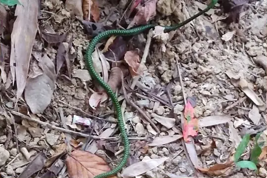
Andaman Bronze-backDendrelaphis andamanensis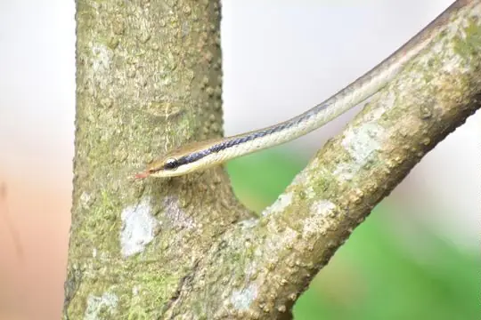
Ashok's Bronzeback Tree SnakeDendrelaphis ashoki Banded BronzebackDendrelaphis striatus
Banded BronzebackDendrelaphis striatus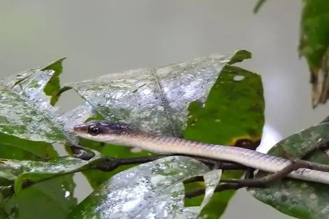
big-eyed tree snakeDendrelaphis macrops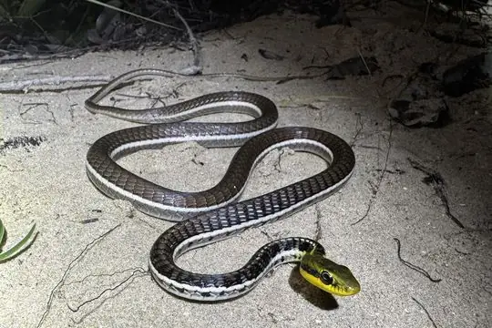
Binh’s Bronzeback SnakeDendrelaphis binhi Boulenger's BronzebackDendrelaphis bifrenalis
Boulenger's BronzebackDendrelaphis bifrenalis Burmese BronzebackDendrelaphis subocularis
Burmese BronzebackDendrelaphis subocularis Common BronzebackDendrelaphis schokari
Common BronzebackDendrelaphis schokari Daudin's BronzebackDendrelaphis tristis
Daudin's BronzebackDendrelaphis tristis Eastern bronzeback tree snakeDendrelaphis proarchos
Eastern bronzeback tree snakeDendrelaphis proarchos Elegant BronzebackDendrelaphis formosus
Elegant BronzebackDendrelaphis formosus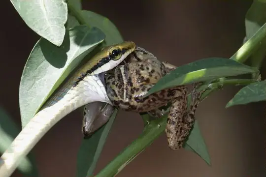
Giri's Bronzeback Tree SnakeDendrelaphis girii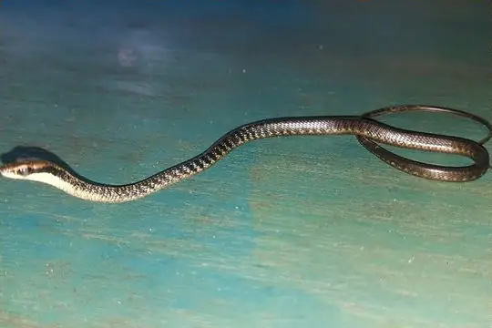
Gore's Bronzeback (biloreatus)Dendrelaphis biloreatus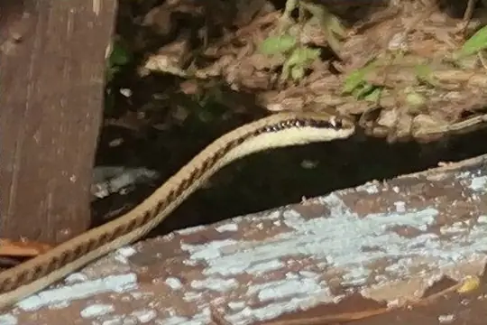
Gore's Bronzeback (walli)Dendrelaphis walli Gray Bronzeback (caudolineatus)Dendrelaphis caudolineatus
Gray Bronzeback (caudolineatus)Dendrelaphis caudolineatus Gray Bronzeback (modestus)Dendrelaphis modestus
Gray Bronzeback (modestus)Dendrelaphis modestus Green Tree SnakeDendrelaphis punctulatus
Green Tree SnakeDendrelaphis punctulatus Green treesnakeDendrelaphis calligaster
Green treesnakeDendrelaphis calligaster Gunther's Bronzeback Tree SnakeDendrelaphis caudolineolatus
Gunther's Bronzeback Tree SnakeDendrelaphis caudolineolatus Haas's Bronzeback SnakeDendrelaphis haasi
Haas's Bronzeback SnakeDendrelaphis haasi- No photo yetHollinrake's BronzebackDendrelaphis hollinrakei
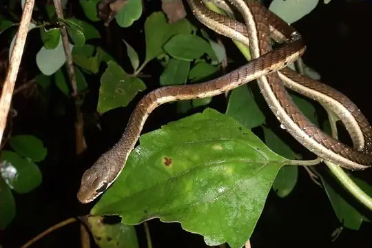
Karnataka BronzebackDendrelaphis chairecacos Kei TreesnakeDendrelaphis keiensis
Kei TreesnakeDendrelaphis keiensis Kopstein's Bronzeback SnakeDendrelaphis kopsteini
Kopstein's Bronzeback SnakeDendrelaphis kopsteini Lesser Sundas BronzebackDendrelaphis inornatus
Lesser Sundas BronzebackDendrelaphis inornatus- No photo yetLorentz River treesnakeDendrelaphis lorentzii
 Luzon BronzebackDendrelaphis luzonensis
Luzon BronzebackDendrelaphis luzonensis Maren's BronzebackDendrelaphis marenae
Maren's BronzebackDendrelaphis marenae Montane TreesnakeDendrelaphis gastrostictus
Montane TreesnakeDendrelaphis gastrostictus Negros BronzebackDendrelaphis fuliginosus
Negros BronzebackDendrelaphis fuliginosus New Guinea BronzebackDendrelaphis lineolatus
New Guinea BronzebackDendrelaphis lineolatus Nganson BronzebackDendrelaphis ngansonensis
Nganson BronzebackDendrelaphis ngansonensis- No photo yetOliver's BronzebackDendrelaphis oliveri
 Painted BronzebackDendrelaphis pictus
Painted BronzebackDendrelaphis pictus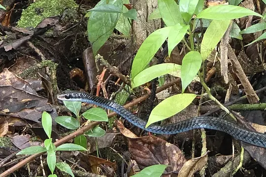
Palau BronzebackDendrelaphis striolatus Palawan bronzebackDendrelaphis levitoni
Palawan bronzebackDendrelaphis levitoni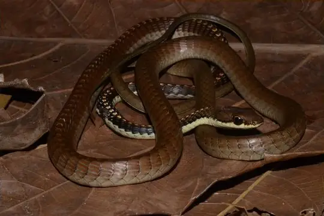
Papuan TreesnakeDendrelaphis papuensis Philippines BronzebackDendrelaphis philippinensis
Philippines BronzebackDendrelaphis philippinensis Sawtooth-necked BronzebackDendrelaphis nigroserratus
Sawtooth-necked BronzebackDendrelaphis nigroserratus Seram BronzebackDendrelaphis grismeri
Seram BronzebackDendrelaphis grismeri Sinharaja tree snakeDendrelaphis effrenis
Sinharaja tree snakeDendrelaphis effrenis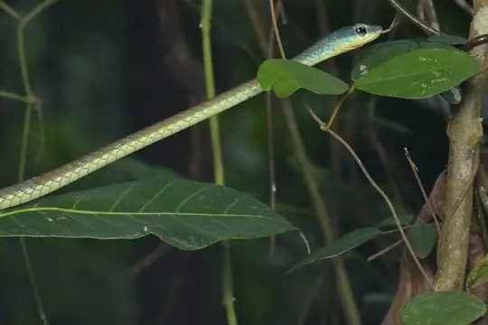
Southern BronzebackDendrelaphis grandoculis Sulu BronzebackDendrelaphis flavescens
Sulu BronzebackDendrelaphis flavescens Terrific BronzebackDendrelaphis terrificus
Terrific BronzebackDendrelaphis terrificus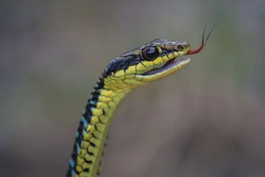
Tiwar's BronzebackDendrelaphis humayuni Underwood's Bronzeback SnakeDendrelaphis underwoodi
Underwood's Bronzeback SnakeDendrelaphis underwoodi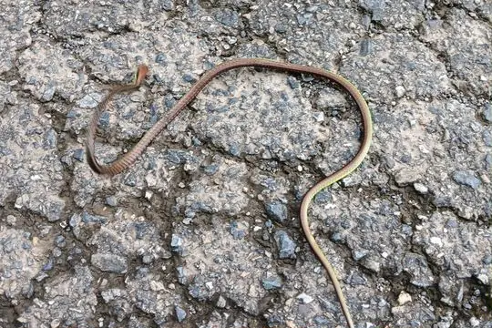
Vogel's BronzebackDendrelaphis vogeli Wall's BronzebackDendrelaphis cyanochloris
Wall's BronzebackDendrelaphis cyanochloris Wickramasinghes BronzebackDendrelaphis wickrorum
Wickramasinghes BronzebackDendrelaphis wickrorum
No snakes in Dendrelaphis match.
About the genus Dendrelaphis
- Family: Colubridae.
- Recorded in: Australia, Bangladesh, Bhutan, Cambodia, China, India, Indonesia, Laos, Malaysia, Myanmar, Nepal, Pakistan, Palau, Papua New Guinea, Philippines, Singapore, Solomon Islands, Sri Lanka, Thailand, Timor-Leste, Vietnam.